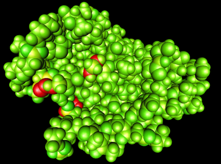

One of our initial goals with ProteinShop was to create initial structures for subsequent global internal energy minimization. Therefore, it was desirable to support on-the-fly calculation of a protein structure's internal energy using the same energy function as inside the optimization algorithm. This would allow judging the overall quality of manipulated protein structures during creation, to cull undesirable structures as early in the process as possible. To make ProteinShop useful in a more general context, it was later decided to replace the fixed energy computation module with a plug-in system that would allow coupling ProteinShop with any external energy computation code. In an even more general sense, it is even possible to couple ProteinShop with any computation module that takes the set of 3D cartesian coordinates of all atoms inside a protein into account and delivers a real number quantifying the "desirability" of a structure.
Proteinshop includes the Amber plug-in to compute the AMBER energy (AMBER) of a protein and to perform local minimization of this energy. The energy computation is based on the AmberEngine library. This library was developed with ProteinShop in mind, but it is not specific to ProteinShop. To compute the AMBER energy of a protein, the AmberEngine initializes a set of internal vectors based on the PDB file of the protein (for this purpose, the PDB file must be in a specific format.) After initialization, all energy computations require only the vector of atoms coordinates. In addition to the total AMBER energy value, AmberEngine makes available to ProteinShop the energy per-atom for visualization, as well as the partial energy components that make up the AMBER model. The user can then select which energy to visualize and can identify high-energy atoms inside the protein.
The current energy computation plug-in requires that the PDB file for the protein satisfies the following two format requirements:
The ordering of the atoms in each amino acid should be the same as the ordering used in the amino files in the Standards directory.
The PDB file should include all the hydrogen atoms.
A residue cap (ACE/NME residue) should be added at each end of the amino acid sequence. ProteinShop will check the PDB file and add these residues automatically if they are missing.
Note that ProteinShop will read any PDB file, regardless of the ordering and insertion of the hydrogen atoms. These format requirements are only necessary for the preprocessing that calculates the AMBER energy.
ProteinShop energy visualization interface allows visualization of the computed energy-values in a per-atom basis. The basic idea is that the energy computation module can compute a partial (energy) value for each atom inside a protein. These per-atom values can then be visualized, for instance, by mapping colors to atoms' van-der-Waals spheres, see Figure 1. This kind of view can be produced by selecting the Draw atoms toggle in the Drawing Toggles Dialog and the Visualize energy toggle in the Energy Visualization Dialog.
|
 |
|
Figure 1: Visualization of per-atom partial energy values by color-coding atoms' van-der-Waals spheres. |
Even though most existing computation codes do not compute
per-atom values, many can easily be augmented to do so. For example,
a code that calculates internal energy based on interactions between
n-tuples of atoms could "localize" its computed internal
energy by splitting the energy contributions computed for each
n-tuple between the n atoms involved. For example, a code that
considers bond angles could split the calculated partial energy
values evenly among the three atoms forming the bond angle.
This is the approach currently used by the AmberEngine plug-in to
compute per-atom energies.
ProteinShop also supports energy visualization based on volume textures superimposed over the geometric protein model. The use of this feature is described in detail by the Energy Visualization Pipeline User's Guide.
To provide even more insight, the AmberEngine module keeps track of separate energy components that make up AMBER, namely the energy terms based on bond distances, bond angles, dihedral angles, and non-bonded interactions. ProteinShop allows the user to toggle energy components separately for visualization. This enables a user to better find and understand energy "hot spots" in a protein, for example by looking for only undesirable dihedral angles, or only for bad non-bonded interferences.
In addition to energy computations, the Amber plug-in provides an optimization routine to start a local minimization of the protein's energy. See the Energy Visualization Dialog. This optimization is performed using the Limited Memory BFGS algorithm (LBFGS) as implemented in the OPT++ toolkit. In ProteinShop, this feature allows real-time visualization of the protein energy minimization process that drives the protein folding process.